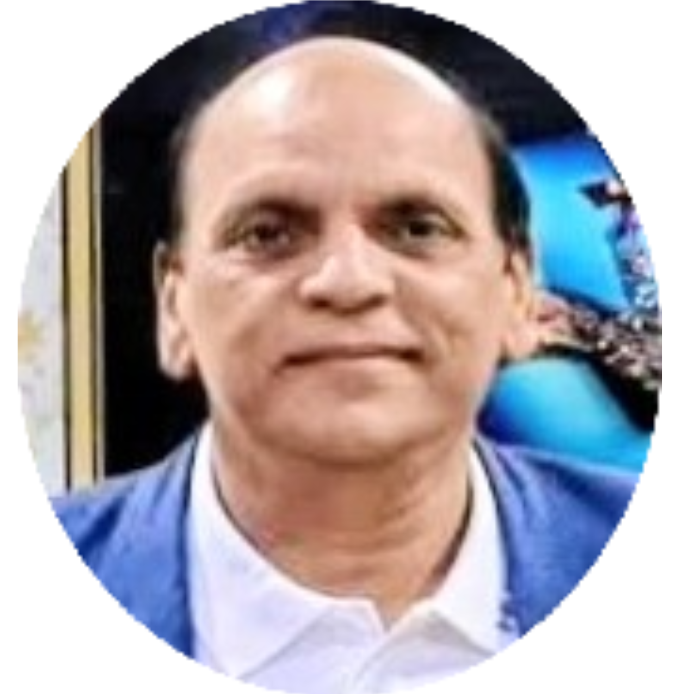

Co-Founder – Indo German Sports Academy

Ex Board Member of Indian Film Producers association(IMPPA). . Member Of Films Director aassociation Mumbai. . Head of Indo German Film Agency, (Heppenheim) Germany. . Sigma Films, Managing Director. . PRISCA, Director.
Vinod Kumar singh, often informally referred to as VK Singh, is a qualified textile engineer. Mr.Singh has also ventured successfully into other avenues of the entertainment industry. Working for more than 25years in film and media business based in India,Mumbai & Germany, Heppenhiem. He jointly owes "Indo German Film Agency" with Sigma Films started by him in 2006 and was head of the agency . He has directed & produced movies in bollywood and abroad. He was associated as associate producer in Ghaat. (manoj bajpayee, ravina tondon), Ghar ke na ghaat ke ( paresh rawal, ompuri, nina Gupta), Red Alert (Sunil Shetty & Samera Reddy) and directed bollywood movies like SPARK (rajnesh duggal daisy Shah, ashutosh Rana, sanjay Mishra, rati agnihotri, ranjeet) and Humraah the traitor shot in Germany (valeria mai & Kushash rusto), also directed festival films like Kamukta, and I love juli. Directed the Ad films like Rupa Microman and other TVC. Produced Ad films for National Geogrpahic Traveller, Hindustan Aeronautics Limited - Vigillance Film, State Bank of India, General Insurance, Brand film for Zee TV and many other corporate films. He is having international experience of film festival and marketing. He is being the important part of Berlin Film Festival, Cannes, American Film Market and Many others. Mr. Singh is very well connected to international market for film making and marketing.
⬅ Back to Leadership